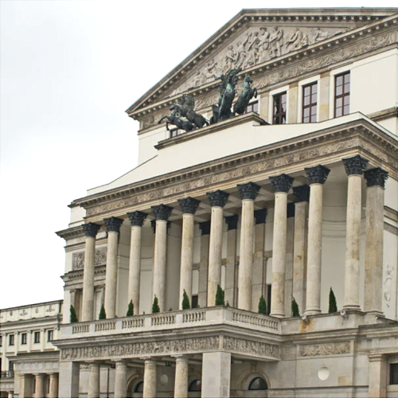
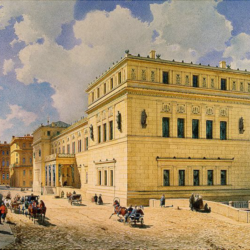
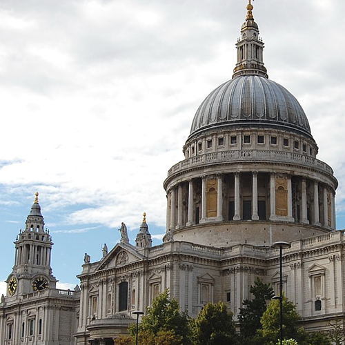
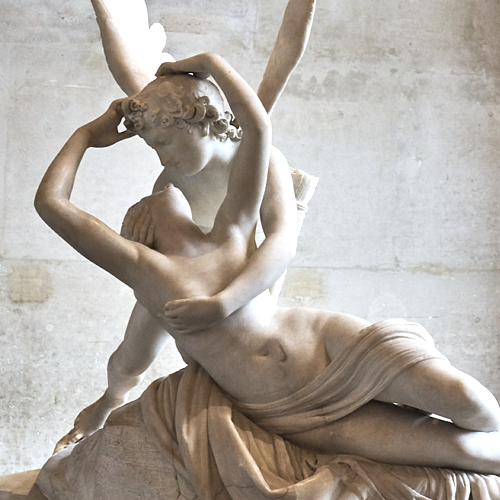
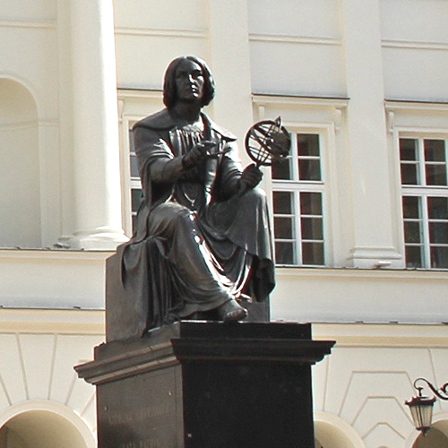
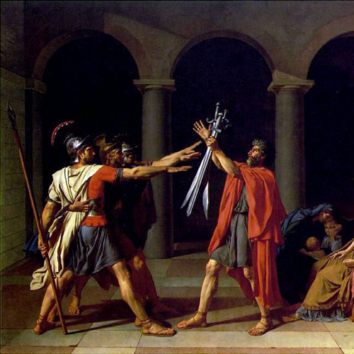
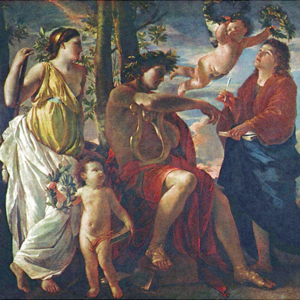
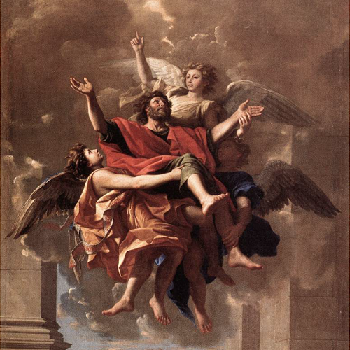
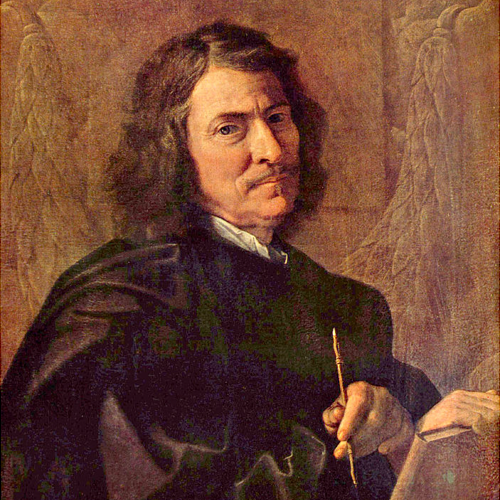
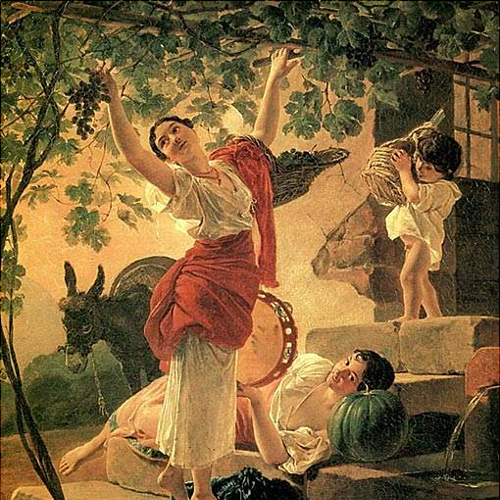

В основе классицизма лежат идеи рационализма. Художественное произведение, с точки зрения классицизма, должно строиться
на основании строгих канонов, тем самым обнаруживая стройность и логичность самого мироздания. Интерес для классицизма
представляет только вечное, неизменное, в каждом явлении он стремится распознать только существенные черты, отбрасывая
индивидуальные признаки.

Инф.
Большой театр
Варшава, Польша
Архитектура
Классицизм пришел на смену барокко, и одновременно с этим европейское общество все чаще стало обращаться к идеям
просвещения, что выразилось во всех аспектах деятельности, в том числе в архитектуре.
Внимание архитекторов привлекли простота, лаконичность, четкость, спокойствие и строгость, характерные для
античной архитектуры, прежде всего греческой.
Сам классицизм стал результатом развития архитектуры Возрождения.
Лео фон Кленце
Лео фон Кленце
Известный архитектор и художник Баварии, автор собственного стиля, основанного на сочетании
ренессанса и классицизма.
Он занимал высокую должность при королевском дворе. Именно он стал автором проекта Нового Эрмитажа
в Санкт-Петербурге.

Инф.
Собор Санта-Мария-дель-Фьоре
Флоренция, Италия
Закрыть

Инф.
Собор Святого Павла
Лондон, Великобритания

Инф.
Амур и Психея
Лувр, Париж, Франция
Скульптура
Толчком к развитию классицистической скульптуры в середине XVIII послужили археологические раскопки древних городов,
расширившие познания современников об античном ваянии.
Скульпторы колебались на грани барокко и классицизма.
Публичные памятники, получившие в эпоху классицизма широкое распространение, давали скульпторам возможность идеализации
доблести и мудрости государственных деятелей.
Верность античному образцу требовала от скульпторов изображения моделей нагими, что вступало в противоречие с
принятыми нормами морали, и позже этот вопрос решился путем перехода к изображению людей в античных тогах.

Инф.
Памятник Копернику
Варшава, Польша

Инф.
Клятва Горациев
Лувр, Париж, Франция
Живопись
Это живописное направление стало абсолютной противоположностью барокко. Оно обусловлено гармонией и осознанием.
Основной чертой стиля являются античные нормы прекрасного и желание идеала, присущие Возрождению.
Также классицизм нередко прибегал к античной мифологии.
При помощи древнегреческой и древнеримской мифологии могли изображаться как сами сюжеты из мифов, так и современные
на тот момент сюжеты с элементами античной мифологии.
Никола Пуссен
Никола Пуссен
Знаменитый французский художник, он являлся основателем стиля классицизм. Обращаясь к темам
античной мифологии, древней истории и Библии, Пуссен раскрывал темы современной ему эпохи.
Своими произведениями он воспитывал совершенную личность, демонстрируя примеры высокой морали
и гражданской доблести.

Инф.
Вдохновение поэта
Лувр, Париж, Франция

Инф.
Вознесение святого апостола Павла
Лувр, Париж, Франция
Художник черпал вдохновение в творчестве классических и современных поэтов, в театральных
представлениях и в философских трактатах.
Но даже канонические сюжеты позволяли ему изображать окружающую его действительность, наполняя
полотна безукоризненно выполненными характерными образами, пейзажами и планами.
Закрыть

Инф.
Никола Пуссен — автопортрет
Большая картинная галерея, Берлин, Германия

Инф.
Девушка, собирающая виноград в окрестностях Неаполя
Государственный Русский музей, Санкт-Петербург, Россия
Во время власти классицизма образовалась конкретная иерархия жанров.
Высокому жанру живописи соответствует исторический, религиозный и мифологический. К Низкому же относятся портрет,
натюрморт и пейзаж, которые причисляются к бытовому жанру, и являются менее значительными.